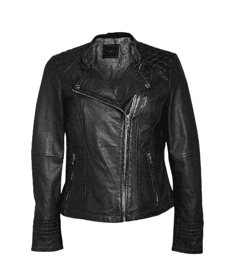
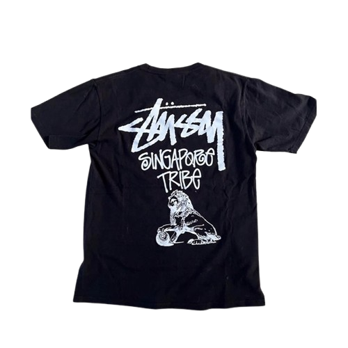
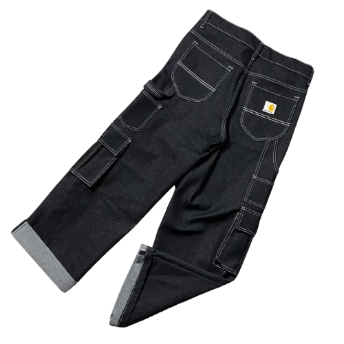
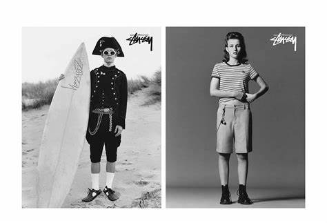
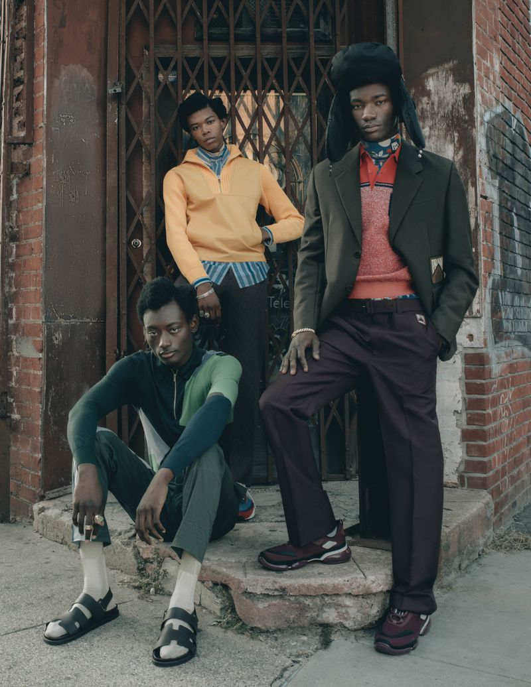
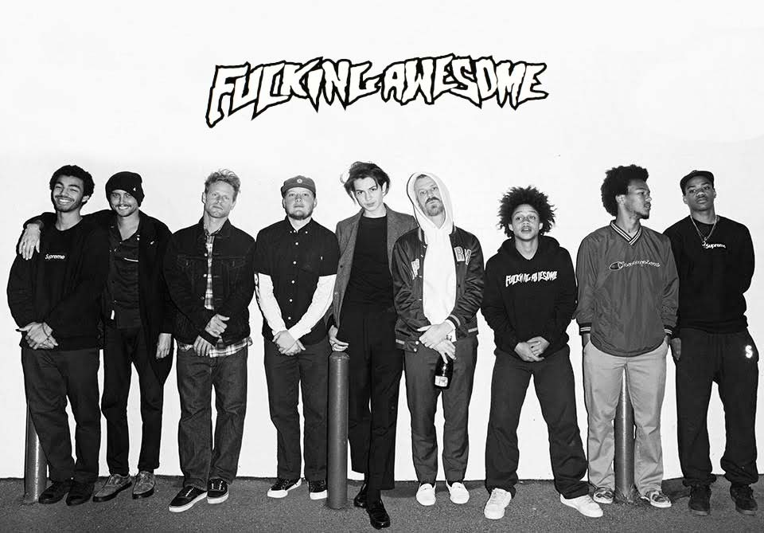
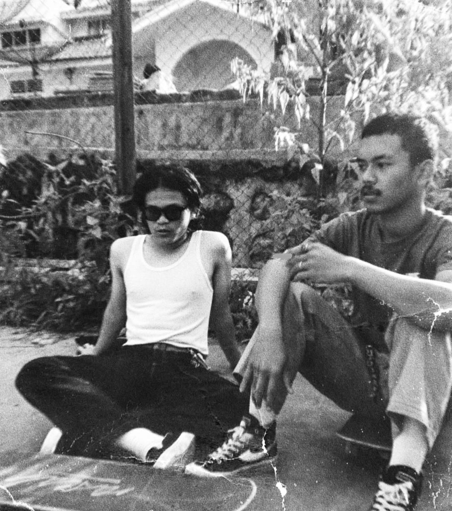
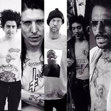

Gaya Urban yang Nyaman
Temukan tren fashion Streetwear terbaru dengan koleksi eksklusif kami.
Koleksi Terbaru

Jaket Ramones
Rp 4.999.000

Stussy t-shirt
Rp 1.200.000

Carhartt Cargo
Rp 1.290.000
Kata Mereka
"Streetwear bukan sekadar gaya berpakaian—ini adalah ekspresi dari sikap, budaya, dan jati diri. Terinspirasi dari jalanan dan dipengaruhi oleh musik, seni, serta semangat kebebasan, streetwear menggabungkan kenyamanan dengan tampilan yang berani. Dari pakaian oversized hingga desain grafis yang unik, streetwear membantumu menampilkan gaya personal dengan percaya diri." - Urban Street
#StreetwearStyle
Lihat tampilan dari komunitas kami:




